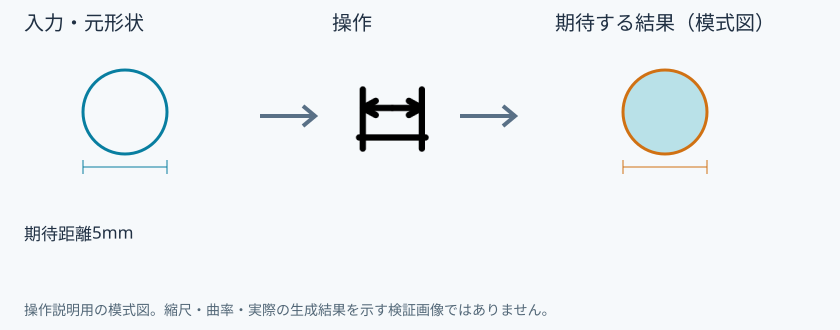
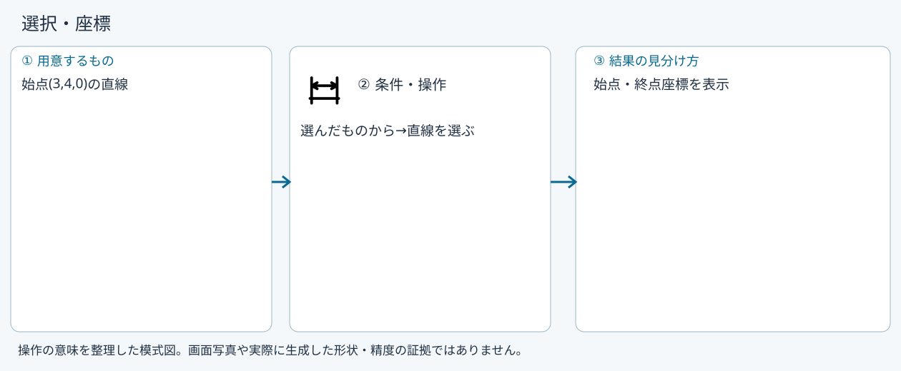
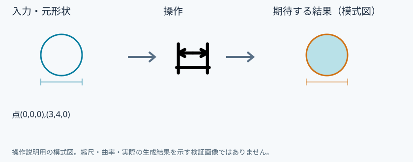
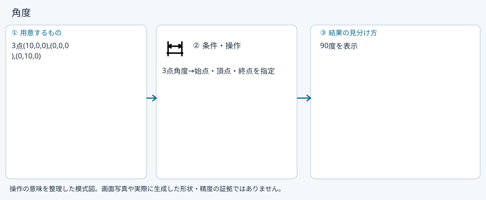
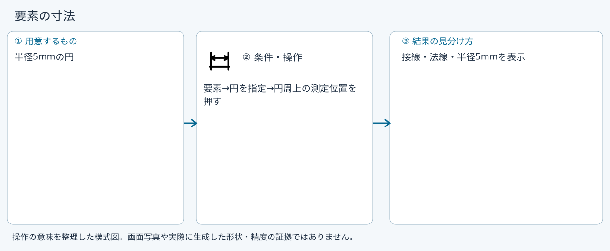
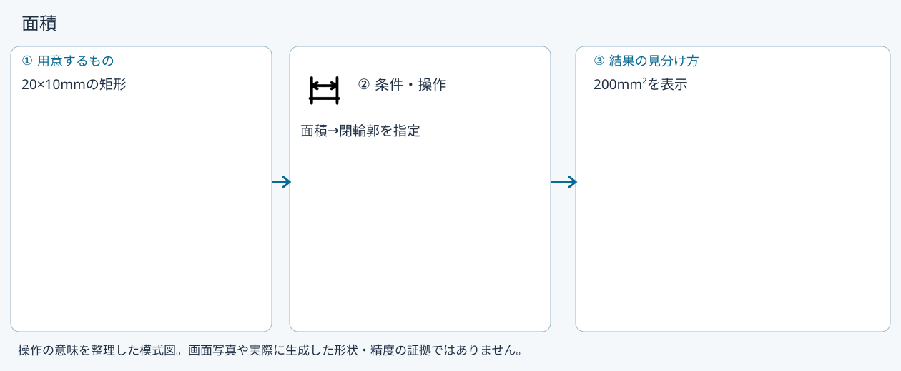

測定
測定
具体例: 2点間の3D距離を調べる

準備
点(0,0,0)と(3,4,0)を作る
操作手順
- 測定を開く
- 2点間を選ぶ
- 2点を順に追加する
設定: 期待距離5mm
結果を確認
右ペインと3Dビューに距離を表示する。測定では形状を変更しない。
取消・やり直し
ダイアログの取消、またはペインの取消を使います。即時操作には未確定段階がありません。 確定済みの文書変更はCtrl+Z、やり直しはCtrl+Yです。保存・書出し済みのファイルはUndoの対象ではありません。
進めない場合
距離や角度を測ります。測った場所から作図点を作れます。
対象欄と3Dの強調を照合し、必要な線・面・部品を各役割へ指定します。処理中は計算表示を確認し、取消が可能な処理は取消を使います。
選択・座標
準備: 始点(3,4,0)の直線

- 選んだものから
- 直線を選ぶ
確認: 始点・終点座標を表示
2点距離
準備: 点(0,0,0),(3,4,0)

- 2点間
- 2点を順に指定
確認: 5mmを表示
角度
準備: 3点(10,0,0),(0,0,0),(0,10,0)

- 3点角度
- 始点・頂点・終点を指定
確認: 90度を表示
要素の寸法
準備: 半径5mmの円

- 要素
- 円を指定
- 円周上の測定位置を押す
確認: 接線・法線・半径5mmを表示
面積
準備: 20×10mmの矩形

- 面積
- 閉輪郭を指定
確認: 200mm²を表示
Windows版の操作画面